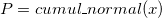
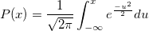
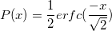

Cumul_normal
Cumul-normal-func
Definition:
 evaluates the cumulative Normal distribution function
- 
The function is based on the fact that
- 
For more information please review the s15abc function in the NAG document.
Parameters:
- x (input, double)
- The argument x of the function.
- (output, double)
- The value of cumulative Normal distribution function